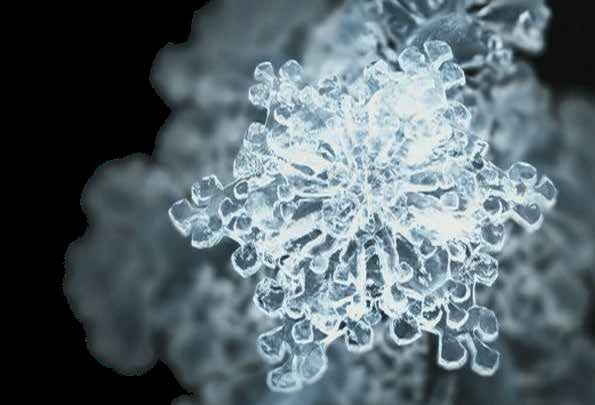
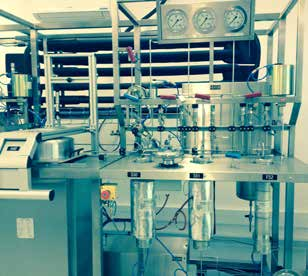

Custom Manufacturing Services
Technical consultancy, bioprocessing, and analytical validation.
Quality Custom Manufacturing
1. State-of-the-art bioprocessing facilities
2. Exclusive and differentiated operating mode
3. Scientific expertise matching your requirements
4. Technical consultancy for design decisions
5. Full compliance with quality and regulatory standards


HPLC & GC Analysis
Fully equipped HPLC, GC, and UV/VIS systems for precise compound detection, reproducibility, and regulatory documentation.

Specialized Processing
From freeze drying to high pressure fluid extractions, tailored to process your raw materials with high yield.

Fermentation Solutions
Enzymatic hydrolysis and target cell growth solutions scaled for biological product applications.